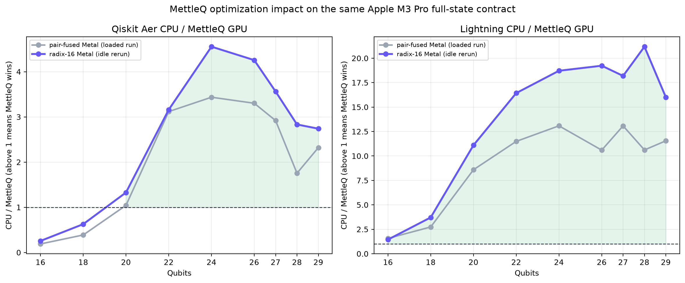
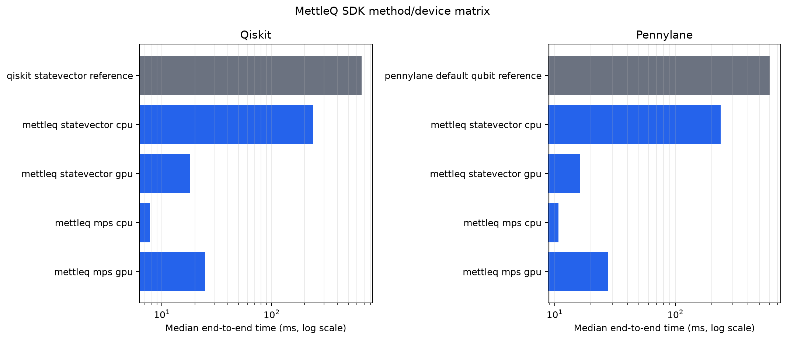
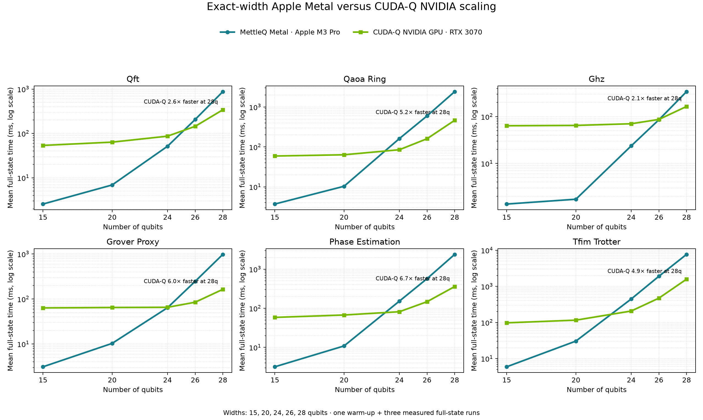
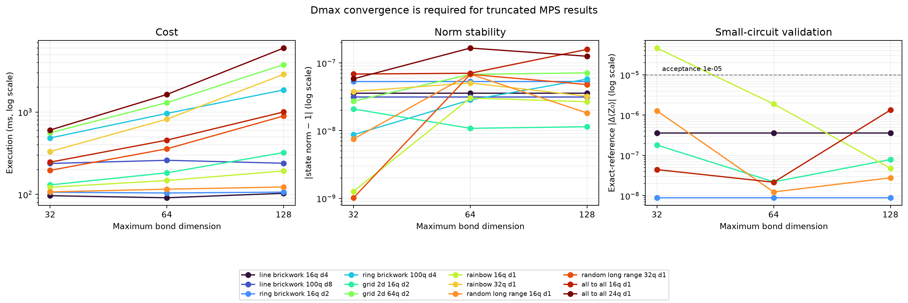
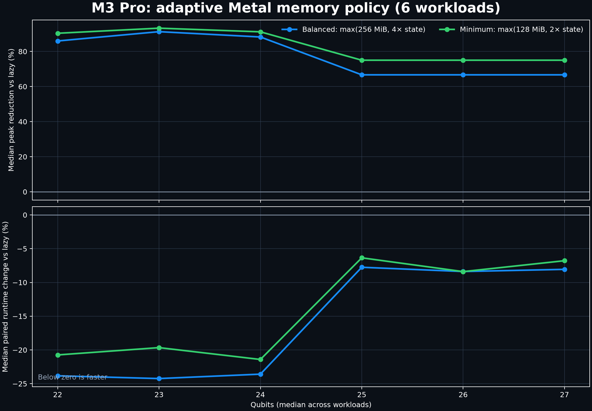

Exact
Statevector
Dense amplitudes, capability-probed Metal kernels, memory preflight, and phase-aligned parity validation.
MettleQ is a local quantum-circuit simulator for Apple Silicon with exact statevectors, bounded matrix-product states, Qiskit and PennyLane adapters, memory preflight, explicit execution plans, and frozen benchmark evidence.
The accelerated path targets macOS arm64. Other platforms can still use the package’s MLX-independent drawing, QASM, and documentation utilities.
python -m pip install "mettleq[sdk]"
git clone https://github.com/MonitSharma/MettleQ.git cd MettleQ python -m pip install -e ".[dev,sdk]"
Both native SDK adapters preserve their result contracts and expose adaptive CPU/GPU selection.
from qiskit import QuantumCircuit, transpile
from mettleq.integrations.qiskit import AdaptiveQiskitBackend
backend = AdaptiveQiskitBackend(precision="single")
circuit = QuantumCircuit(2, 2)
circuit.h(0)
circuit.cx(0, 1)
circuit.measure([0, 1], [0, 1])
result = backend.run(
transpile(circuit, backend), shots=1000,
seed_simulator=7,
).result()
print(result.get_counts())import pennylane as qml
dev = qml.device("mettleq.adaptive", wires=2,
precision="single")
@qml.qnode(dev)
def bell():
qml.Hadamard(0)
qml.CNOT(wires=[0, 1])
return qml.expval(qml.Z(0) @ qml.Z(1))
print(bell())Different workloads need different numerical representations. MettleQ makes the tradeoff visible in the execution report.
Dense amplitudes, capability-probed Metal kernels, memory preflight, and phase-aligned parity validation.
CPU-native tensor network with bond caps, recoverable SVDs, persistent routing, truncation evidence, and convergence checks.
Separate approximation contract and isolated worker environment for peaked-circuit experiments.
Small work and double precision can remain on Aer or Lightning CPU. Larger exact statevector workloads move to Metal only when the measured crossover, memory model, output contract, and hardware capability all agree.
A preflight refusal is reported as a result. A circuit that violates the conservative memory envelope is not launched.
Apple M3 Pro · 12 CPU cores · 18 integrated GPU cores · 36 GB unified memory · macOS arm64 · MLX 0.32 · Qiskit Aer 0.17.2 · PennyLane Lightning 0.45.
| Qubits | Aer CPU / MettleQ GPU | Lightning CPU / MettleQ GPU | Worst full-state error |
|---|---|---|---|
| 16 | 0.255× | 1.445× | 3.75e−7 |
| 18 | 0.627× | 3.710× | 3.98e−7 |
| 20 | 1.327× | 11.097× | 4.02e−7 |
| 24 | 4.554× | 18.713× | 1.99e−7 |
| 28 | 2.833× | 21.177× | 1.22e−7 |
| 29 | 2.739× | 16.005× | 1.33e−7 |
Ratios above 1× favor MettleQ. On this depth-three full-state workload, the crossover is 20 qubits against Aer and 16 qubits against Lightning.



The cross-hardware campaign matched workloads at 15, 20, 24, 26, and 28 qubits. CUDA-Q remains faster on several high-width bandwidth-dominated cases.
| Workload at 28q | MettleQ Metal · M3 Pro | CUDA-Q · RTX 3070 | Lightning GPU · RTX 3070 | Aer CPU · WSL |
|---|---|---|---|---|
| QFT | 877.90 ms | 340.38 ms | 6,635.45 ms | 13,860.52 ms |
| Ring QAOA · 6 layers | 2,428.86 ms | 463.80 ms | 7,254.50 ms | 17,438.65 ms |
| GHZ | 341.94 ms | 173.24 ms | 1,141.82 ms | 3,332.40 ms |
| Grover proxy | 982.80 ms | 165.94 ms | 4,350.20 ms | 3,001.91 ms |
| Phase estimation | 2,391.85 ms | 363.80 ms | 6,881.60 ms | 16,894.65 ms |
| TFIM · 20 steps | 7,695.88 ms | 1,565.92 ms | 27,163.63 ms | 54,528.06 ms |

The production MPS path in main is newer than the agent branch: it retains the native CPU core, persistent logical routing, native readout, and direct single-gate updates. The branch’s older rewrite would remove those paths, so only its safe regression tests were extracted.
| Workload | MettleQ routed | MettleQ restore | MettleQ native tensors | Aer CPU MPS | Routed / Aer |
|---|---|---|---|---|---|
| GHZ · 1,000q d1 | 338.76 ms | 338.28 ms | 797.22 ms | 57.90 ms | 0.17× |
| Line · 100q d8 | 153.25 ms | 154.50 ms | 514.20 ms | 29.00 ms | 0.19× |
| Grid · 36q d2 | 249.91 ms | 248.75 ms | 522.18 ms | 422.57 ms | 1.69× |
| Rainbow · 32q d1 | 710.44 ms | 888.97 ms | 1,255.08 ms | 3.65 ms | 0.005× |
| Random long range · 32q d1 | 264.76 ms | 376.30 ms | 544.00 ms | 3.40 ms | 0.013× |
| All-to-all · 20q d1 | 851.13 ms | 4,700.62 ms | 1,422.03 ms | 25.17 ms | 0.030× |
MPS results are contract-sensitive. Aer is still substantially faster on several CPU-MPS families; the MettleQ win on the 36q grid is a useful measured result, not a claim of blanket superiority.


The repository is the canonical source for raw runs, manifests, tutorials, and release checks. The website is an index and explanation, not a replacement for the data.
python -m pip install -e ".[dev,tests]" pytest -q python -m build python -m twine check dist/* # Apple Silicon simulator + SDK + tutorial suite ./test.sh python tools/run_tutorial_notebooks.py --no-write